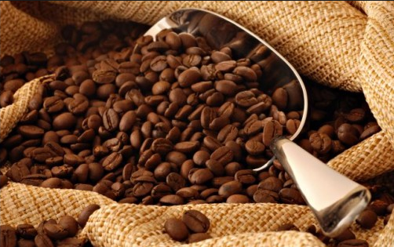

Soiuri
Arabica este cea mai apreciată și cultivată cafea. Se obține din arborele coffea arabica originar din Etiopia și numără aproape 200 de specii. Multe varietăți au luat naștere fie prin adaptarea la soluri diferite, fie prin hibridare cum ar fi : Blue mountain în Jamaica, Moka cu gust fructuos, Bourbon apărut în Insulele Mauritius, Java etc. Arabica este o cafea cu mai puțină cofeină (0.8 și 1.4) %, apreciată datorită calităților sale aromatice și fineții gustului.
Robusta (Coffea canephora sau Coffea robusta) are un conținut ridicat de cafeină (1,7 – 4%), un gust puternic și mai puțin aromatizat. Robusta se evidențiază prin gustul tare, mai amar, mult mai pregnant ca la cafeaua Arabica. Robusta este utilizată foarte mult în producția de cafea solubilă (instant) și în gama de cafea espresso, precum și în amestec cu Arabica pentru a sublinia aroma cafelei.
Liberica, originară din regiunea Monrovia, Liberia, este asemănătoare cu Robusta, are de asemenea o creștere rapidă și poate rezista la condiții climaterice nefavorabile. Se cultivă exclusiv în câmpiile subtropicale ale Africii de Vest și Americii de Sud, unde umiditatea este foarte mare și temperatura cuprinsă între 20 și 25 °C. Boabele sunt adesea deformate, de dimensiune medie și culoare de la brună la galbenă. Calitatea acestei specii de cafea este mediocră
Maragogype. Acest arbore de cafea a fost descoperit în vecinătatea orașului Maragogype, statul Bahia din Brazilia. Este un hibrid rezultat prin încrucișarea dintre arabica și liberica. Este cafeaua cu cele mai mari boabe din lume, dimensiunile boabelor sunt de 2-3 ori mai mari.[7] Cultura sa este extrem de împrăștiată (Guatemala, Brazilia, Nicaragua, Mexic, Columbia și Java), la o altitudine variind între 600 și 1000m. Boabele de cafea ale acestui arbust sunt de culoare verzuie, de calitate superioară și medie, iar cafeaua are un gust fin și parfumat.